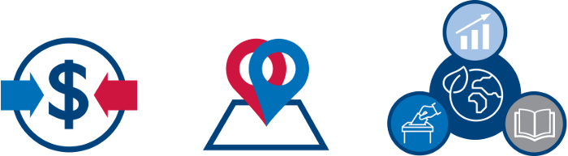

Wildlife and Communities Gain: Transforming Approaches to Conservation in Kenya

Funding Approach: Co-funded. Geographic Approach: Co-located. Sectors Integrated: Democracy, Human Rights, and Governance; Biodiversity; Economic Growth; and Education.
In northern Kenya, the USAID/Kenya and East Africa Mission is working with the Northern Rangelands Trust (NRT) to provide an integrated solution for the increased self-reliance and resilience of hundreds of thousands of Kenyan pastoralists. Pastoralist and farming communities in the arid lands of northern Kenya face many interlinked challenges, including insecurity, poverty, a lack of economic opportunities, social exclusion, severe natural resource degradation, growth of human and livestock populations, and adverse climate impacts. This area also hosts a rich diversity of Kenya’s most threatened wildlife species, but dwindling resources have led to inter-tribal conflict and wildlife poaching. To promote conservation, secure peace, and enhance livelihoods, NRT and partners developed an integrated approach to address the challenge of degraded land and overused grasslands, forests, and fisheries due to rapid human and livestock population growth as well as the challenges posed by the increasing impacts of climate change.
NRT’s program supports a holistic, multi-sectoral, community-led response with strong support from government and development agencies. USAID is NRT’s largest and longest-term donor. Through NRT, the USAID/Kenya and East Africa Mission demonstrates that biodiversity investments can generate benefits for other sectors, including democracy, human rights, and governance; economic growth and livelihoods; water and sanitation; health; and education. With support from USAID, NRT created a community conservancy model that works with 39 conservancies in northern Kenya through the USAID Resilient Community Conservancies Program. These community-owned, locally-led, and locally-managed conservancies improve the lives and livelihoods of more than 400,000 residents from 18 different ethnic groups spread over ten counties in one of Kenya’s major wildlife migration corridors. The community conservancies also provide habitat and security for the majority of Kenya’s wildlife, 75 percent of which is found on community lands, outside of the country’s national parks and reserves. These community-led investments in conservation and development exemplify the commitment and capacity of landowners to provide significant space for wildlife, contributing to Kenya’s journey to self-reliance.
Nearly 2,000 people are currently involved in conservancy-led savings and credit cooperatives and 71,000 people benefit from 83 conservancy-funded and community-identified development projects.
A Community Conservancy Model
NRT’s participatory, multi-stakeholder community conservancy model has proven to be robust, empowering, and impactful. NRT engages, builds capacity, and enables communities to develop locally-led governance structures and to lead peace and security efforts. Communities are taking the lead on wildlife conservation and rangeland management; identifying, implementing, and managing development projects; and building sustainable businesses linked to biodiversity conservation. The conservancies are also establishing relationships with private investors, government, and other organizations to reduce reliance on NRT donor funding and become a critical part of north Kenya’s socio-economic development. A number of the conservancies are now receiving direct donor funding.
These efforts are achieving progress in four related areas: 1) strengthening conservancy governance, 2) building peace and security, 3) creating the conditions for growth, and 4) stabilizing the rangelands and conserving wildlife. Importantly, the peace and stability that strengthened conservancy governance supports lead to both increased biodiversity conservation and economic gains, in addition to other human well-being benefits.The 39 NRT supported community conservancies spread over ten counties in one of Kenya’s major wildlife migration corridors, a size equal to all of Kenya’s national parks and reserves combined.
NRT’s community-run endangered species sanctuaries for elephants, black rhino, hirola, and giraffe have seen a 96 percent drop in the number of illegally killed elephants for ivory since 2012. In one community-run sanctuary, there has been a 160 percent annual population growth of the critically endangered hirola, the world’s most endangered antelope. Improved biodiversity, in turn, contributed to increased tourism revenue. In 2019, ecotourism revenue to NRT communities increased 21 percent from the previous year. NRT and the community conservancies directly employ 1,300 people, making them one of the biggest employers in the northern Kenya landscape. More than 1,489 women and youth benefitted from NRT Conservancy Livelihood Fund-funded microfinance initiatives in 2019, and 68,600 people benefitted from 126 locally-led and locally-managed development investments. The conservancies then re-invest this revenue in other sectors, including water supply and sustainable infrastructure, such as health facilities, conservancy roads, and airstrips.
In addition, nearly 2,000 people are currently involved in conservancy-led savings and credit cooperatives and 71,000 people benefit from 83 conservancy-funded and community-identified development projects. The latter include microfinance projects that help women entrepreneurs through NRT’s BeadWORKS business and projects to develop eco-friendly solutions to address the spread of invasive species. Landowners in the conservancies are then using their increased income to send their children to school; an additional 3,000 students receive education bursaries each year from the conservancies’ commercial revenue. Schools in the conservancies raise awareness on how biodiversity conservation supports local livelihoods, which helps to increase understanding among the communities that their well-being is linked to the biodiversity around them. On the coast, 88 percent of conservancy members believe that wildlife is important to their future.
Collectively, these efforts show how the USAID/Kenya and East Africa Mission’s integrated approach generates benefits for multiple sectors. Strengthening governance among NRT’s conservancies helps build peace and security, which, in turn, creates the conditions for tackling wildlife poaching and creating livelihood opportunities. NRT’s efforts to reduce poaching levels results in increased wildlife numbers and stabilized wildlife populations, which subsequently contributes to increased tourism. Improved rangeland management enables communities to stay in one place longer, facilitating educational opportunities for children.
NRT’s achievements extend beyond its conservancy borders; NRT serves as a model to advance the conservancy approach and integrated natural resource management across Kenya. NRT’s success helped build support for a decentralized system of governance for the management of wildlife resources and contributed to Kenya’s 2011 Wildlife Conservation and Management Bill and the 2012 Conservancy Regulations. NRT also helped to form a national umbrella organization for all community conservancies, the Kenya Wildlife Conservancies Association. The impact NRT is making, with USAID support, is nothing short of transformative.
Lessons Learned
Share experiences and evidence with colleagues to enhance their understanding of integration benefits across sectors.
Communicate efforts to promote holistic, cross-sectoral development with mission colleagues and share concrete results from integration, once they are available. Continue to share data and experiences to help colleagues in other sectors understand how biodiversity investments generate benefits for other sectors. Organize cross-sectoral field visits to illustrate how co-located activities can maximize benefits to multiple sectors.
Use GIS and other tools to illustrate the potential benefits of co-location and enhance integration.
Employ GIS to show colleagues the geographic overlap or geographic proximity of various sector investments. Use this co-location as a starting point for discussions on how sectors could amplify their investments through an integrated approach.
Promote integration at the highest levels.
Encourage leadership to advocate for integration. USAID/Kenya and East Africa Mission staff stressed that the support of the Mission Director and office directors encouraged colleagues from other sectors to invest in NRT.
Learn More
Explore more case studies on the USAID Biodiversity Integration Case Competition website.
Learn more about biodiversity integration with other USAID technical sectors on the Biodiversity Conservation Gateway.
Visit NRT’s website, USAID’s fact sheet for more information on community conservancies. USAID’s story, An End To Poaching, also includes more photos, resources on NRT.
Contact
Beatrice Wamalwa, Deputy Chief, Office of Environment, USAID/Kenya and East Africa